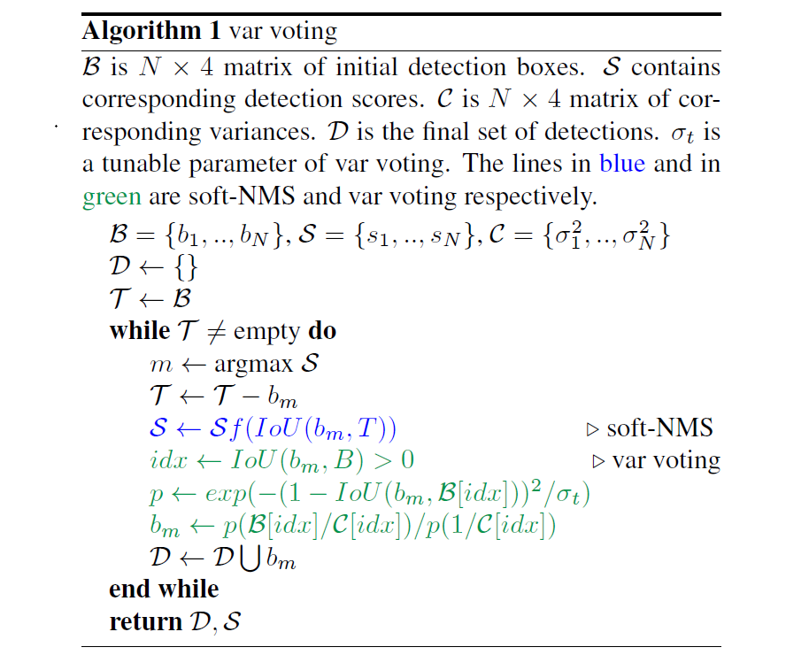

3.3. 算法流程
论文假设Bounding box为高斯分布：
PΘ(x)=2πσ21e−2σ2(x−xe)2
ground truth符合delta分布：
PD(x)=δ(x−xg)
KL散度可表示为：
Θ^=argminΘDKL(PD(c)∣∣PΘ(x))
推导过程详见原文，重点看作者推导的KL Loss：
Lreg=α(∣xg−xe∣−21)−21log(α+ϵ)
是不是和L1正则化很像？是不是预测的Bounding box与ground truth的曼哈顿距离的一维表示？

如图所示Softer-NMS的实现过程，其实很简单，预测的四个顶点坐标，分别对$IoU>N_t$的预测加权平均计算，得到新的4个坐标点。第$i$个box的$x_1$计算公式如下（j表示所有$IoU>N_t$的box）：
x1i:=∑j1/σx1,j2∑jx1j/σx1,j2
subject to IoU(x1j,x1i)>Nt
考虑特殊情况，可以认为是预测坐标点之间求平均值。